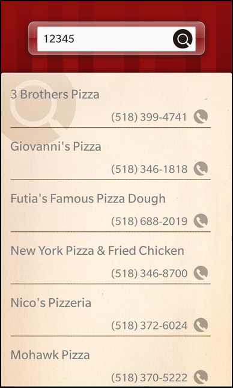
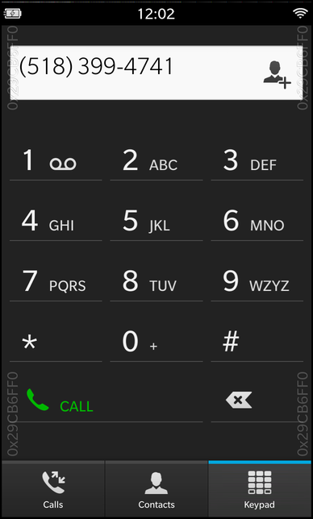

Files:
The Call a Pizza example allows the user to look up the name and phone number of pizzerias in a certain region of the US by entering a zip code. The results are displayed in a list from where the user can invoke the phone dial pad directly for the selected phone number.


In this example we'll learn how to use the Phone class of the BB10 framework to invoke the dial pad of the phone application with a phone number preselected. The logic to search for the pizzerias is encapsulated in the object '_pizzeriaSearcher'.
The UI of this sample application consists of two pages. The main page contains an input field for the zip code and a button to trigger the search. Once the user entered a valid zip code and started the search, the second page slides in with a ListView that contains the search results. When the user clicks on one of the result items, the phone application is invoked with the associated number preselected.
TextField { id: zipCodeField horizontalAlignment: HorizontalAlignment.Center verticalAlignment: VerticalAlignment.Center preferredWidth: 530 preferredHeight: 65 hintText: "" input { submitKey: SubmitKey.Search onSubmitted: root.startSearch() } } ImageButton { horizontalAlignment: HorizontalAlignment.Right verticalAlignment: VerticalAlignment.Center translationX: -60 defaultImageSource: "asset:///images/find_button.png" pressedImageSource: "asset:///images/find_button.png" onClicked: root.startSearch() }
Whenever the user clicks the submit key for the zip code TextField on the keyboard or clicks on the search button which is located next to the zip code TextField, the startSearch() function is invoked.
// A helper function to avoid code duplication function startSearch() { showListViewAnimation.play() _pizzeriaSearcher.zipCode = zipCodeField.text }
Inside that function we first trigger the animation to slide in the second page with the ListView and then update the 'zipCode' property of the PizzeriaSearcher object with the current text of the zip code TextField. This triggers the search on the internet for all pizzerias in the given region.
The search result is available a DataGroupModel through the 'model' property of the PizzeriaSearcher object, so that the ListView can use it directly as its data model.
ListView { horizontalAlignment: HorizontalAlignment.Fill verticalAlignment: VerticalAlignment.Bottom preferredHeight: 1030 dataModel: _pizzeriaSearcher.model listItemComponents: [ ListItemComponent { type: "item" PizzeriaItem { title: ListItemData.Title description: ListItemData.Phone } } ] onTriggered: { phone.requestDialpad(dataModel.data(indexPath).Phone) } }
Whenever the user selects one of the items in the ListView and the triggered() signal is emitted and we invoke the requestDialPad() method on the Phone object. As parameter we pass the currently selected phone number.
attachedObjects: [ Phone { id: phone } ]
The Phone object itself is created as an attached object of the main page.
The PizzeriaSearcher object encapsulates the search of the pizzerias for a given zip code on the internet.
To make its functionality available in QML, we export it as context property inside the main() function.
// Load the UI description from main.qml QmlDocument *qml = QmlDocument::create("asset:///main.qml").parent(&app); // Make the PizzeriaSearcher object available to the UI as context property qml->setContextProperty("_pizzeriaSearcher", new PizzeriaSearcher(&app));
The PizzeriaSearcher provides a property 'zipCode' that is used to define the region to search and a property 'model', which is a GroupDataModel that contains the search results. The actual work of requesting the data from the web service and parsing the returned data is done by a DataSource object.
class PizzeriaSearcher : public QObject { Q_OBJECT // The list of found pizzerias Q_PROPERTY(bb::cascades::GroupDataModel* model READ model CONSTANT) // The zip code of the region to search for pizzerias Q_PROPERTY(QString zipCode READ zipCode WRITE setZipCode NOTIFY zipCodeChanged) public: PizzeriaSearcher(QObject *parent = 0); Q_SIGNALS: void zipCodeChanged(); private Q_SLOTS: void dataLoaded(const QVariant &data); private: bb::cascades::GroupDataModel* model() const; QString zipCode() const; void setZipCode(const QString &zipCode); bb::cascades::GroupDataModel *m_model; bb::data::DataSource *m_dataSource; QString m_zipCode; };
Inside the constructor of the class we disable the grouping functionality of the GroupDataModel, since we want to show a plain list in the UI. Afterwards we define the query for extracting the wanted information from the XML document that is returned by the search web service. In the last step we create a signal/slot connection to invoke the dataLoaded() slot whenever the data have been successfully downloaded and parsed.
PizzeriaSearcher::PizzeriaSearcher(QObject *parent) : QObject(parent) , m_model(new GroupDataModel(this)) , m_dataSource(new DataSource(this)) { // Disable item grouping in the data model m_model->setGrouping(ItemGrouping::None); // Set the XPath expression to extract the result items from the XML document m_dataSource->setQuery(QLatin1String("/ResultSet/Result")); // Invoke out dataLoaded slot whenever the data source has loaded and parsed the XML document connect(m_dataSource, SIGNAL(dataLoaded(QVariant)), this, SLOT(dataLoaded(QVariant))); }
Whenever the zip code property is updated, we assemble the URL for the search web service, set it on the DataSource object and trigger the search.
void PizzeriaSearcher::setZipCode(const QString &zipCode) { if (m_zipCode == zipCode) return; m_zipCode = zipCode; emit zipCodeChanged(); m_dataSource->setSource(assembleSearchUrl(m_zipCode)); m_dataSource->load(); }
In this example we use the Yahoo web service for the search, therefor we assemble the URL inside the assembleSearchUrl() helper function.
static QUrl assembleSearchUrl(const QString &zipCode) { QUrl url; // Configure the REST access point url.setScheme(QLatin1String("http")); url.setHost(QLatin1String("local.yahooapis.com")); url.setPath(QLatin1String("/LocalSearchService/V3/localSearch")); // This appid is reserved for this example application. Using it for something else will result in bad karma! url.addQueryItem(QLatin1String("appid"), QLatin1String("H.A4m8fV34HyNuOXZKbEnrjRDfMQJhA65jnhTej8vPBMWFzN0Kya5LgpRtXoNQ--")); // We search for pizzerias ... url.addQueryItem(QLatin1String("query"), QLatin1String("pizza")); // ... in the given region ... url.addQueryItem(QLatin1String("zip"), zipCode); // ... and limit the results to 10. url.addQueryItem(QLatin1String("results"), QLatin1String("10")); return url; }
When the data have been successfully downloaded and parsed, we clear the GroupDataModel and fill it with the new results from the web service query.
void PizzeriaSearcher::dataLoaded(const QVariant &data) { // Clear the model ... m_model->clear(); // ... and fill it with the search result data m_model->insertList(data.toList()); }